Version 4: sensitivity and matched collection policies
Constructed resampling of genuine ACS records and a separate corrected natural OULAD comparison. These are distinct evidence types.
01_sensitivity_unchanged
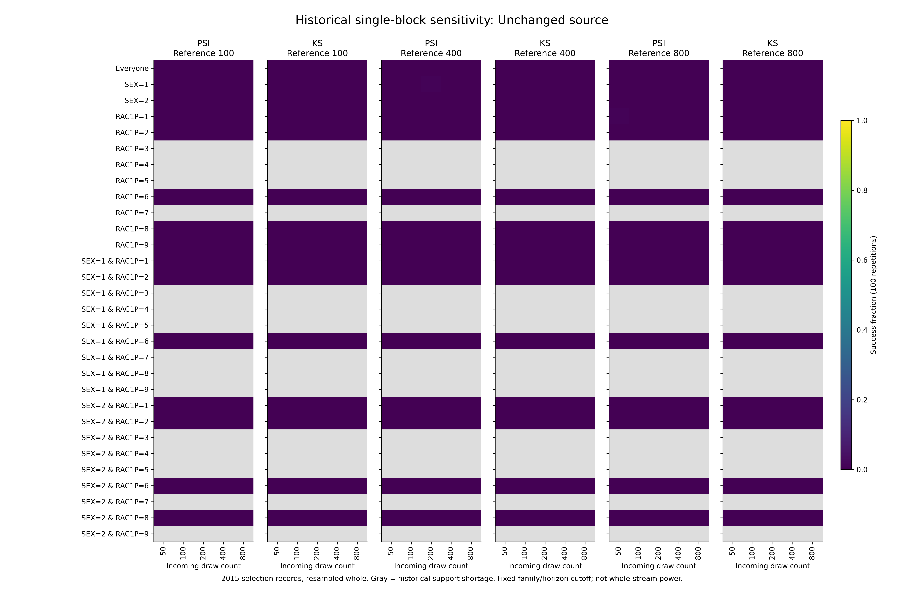
Each square reports how often a single block signalled under the declared constructed condition. Reference size, incoming size and statistic vary. Gray groups lack enough independent historical source households; they are not successful or failed tests.
Exact source CSV · PDF · SVG
01_sensitivity_age_up2
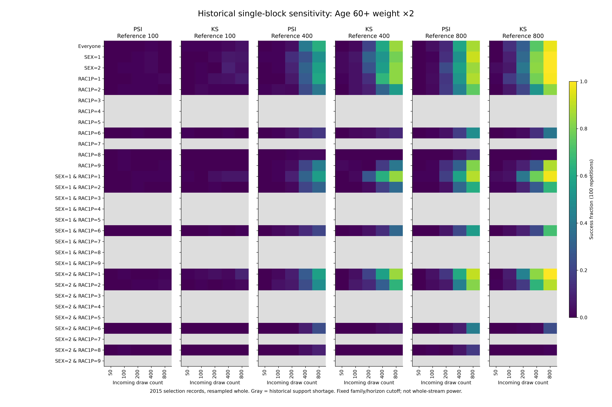
Each square reports how often a single block signalled under the declared constructed condition. Reference size, incoming size and statistic vary. Gray groups lack enough independent historical source households; they are not successful or failed tests.
Exact source CSV · PDF · SVG
01_sensitivity_age_up4
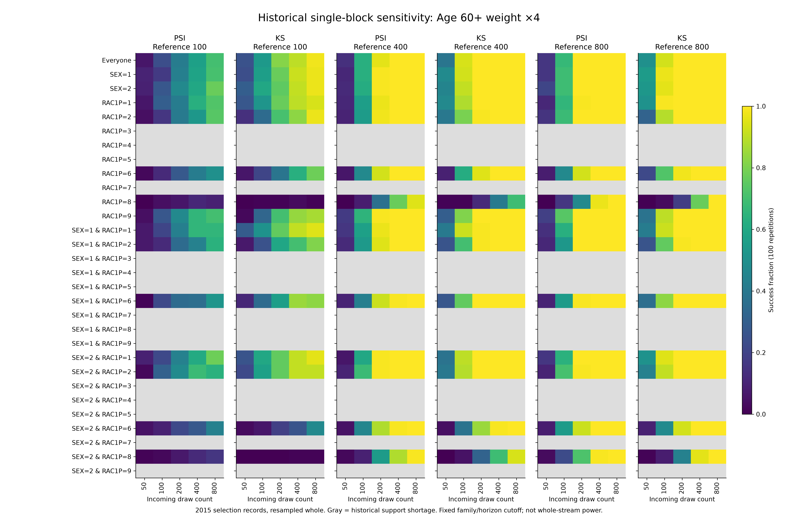
Each square reports how often a single block signalled under the declared constructed condition. Reference size, incoming size and statistic vary. Gray groups lack enough independent historical source households; they are not successful or failed tests.
Exact source CSV · PDF · SVG
02_frozen_targets_validation
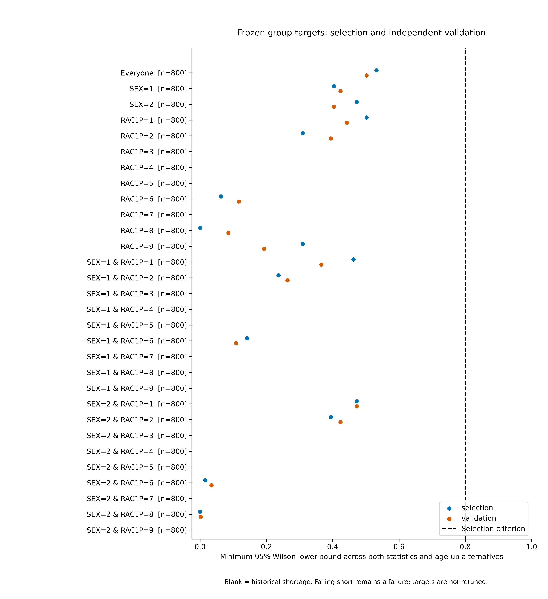
Dots show the worst lower confidence bound across the two statistics and both design changes at the frozen group target. The dashed line is the declared 80% criterion. Missing dots mean support shortage. This check does not certify stream detection probability.
Exact source CSV · PDF · SVG
03_paired_policy_alerts
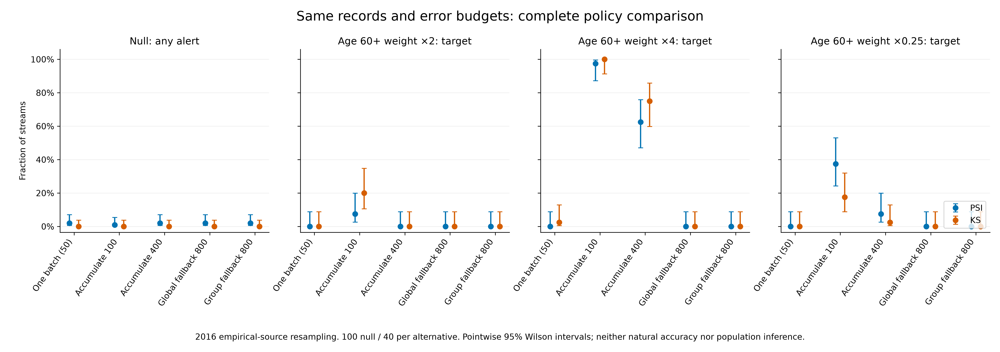
The null panel asks whether any intersection-family alert occurred. The alternative panels ask whether the prespecified target group was detected after onset. Every declared policy and both statistics are shown on identical streams, with misses included.
Exact source CSV · PDF · SVG
03b_paper_policy_alerts
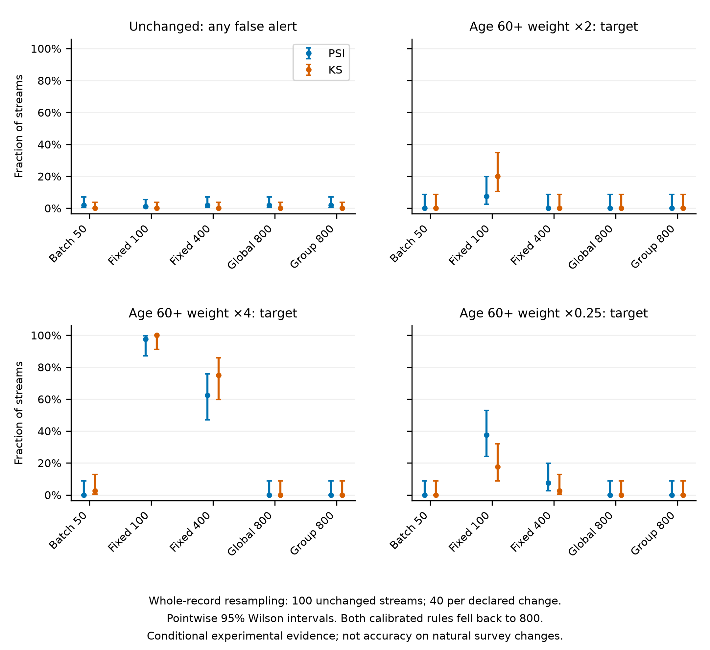
Paper-sized version of the complete four-condition policy comparison. It uses exactly the same rows, intervals, scale and methods as figure 03; neither favorable nor unfavorable conditions were omitted.
Exact source CSV · PDF · SVG
04_all_group_assessability
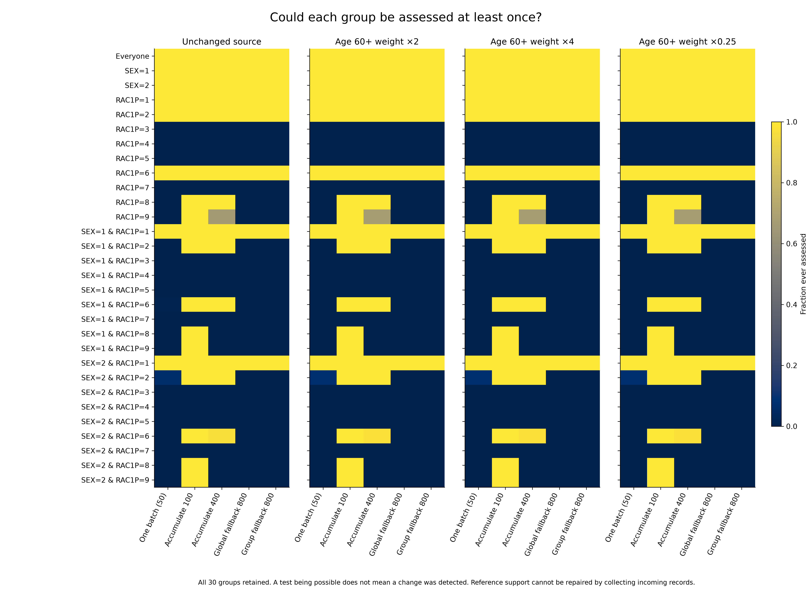
This chart shows whether a policy collected enough records to perform any test for each group. Low assessability and never-assessed groups remain visible. PSI and KS have exactly the same availability because their collection schedule is shared.
Exact source CSV · PDF · SVG
05_detection_wait_including_misses
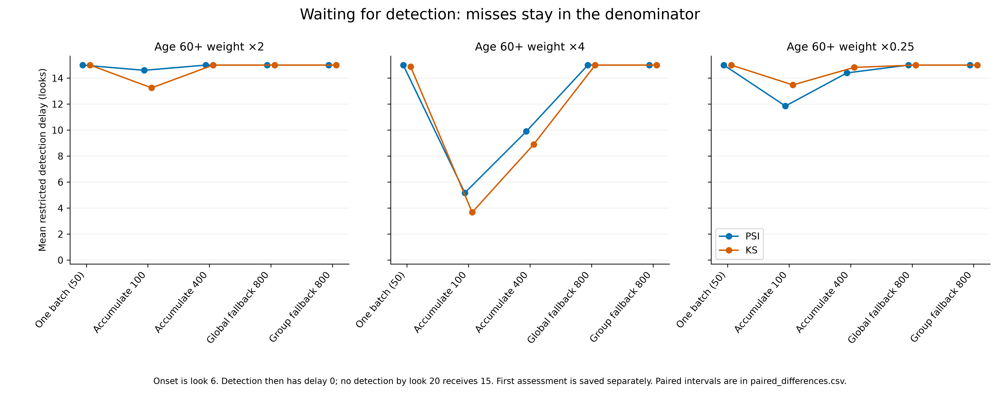
A lower number means earlier detection. Undetected streams receive the full 15-look restricted waiting value, so a method cannot look fast by excluding its misses. These are constructed delivery looks, not days or survey years.
Exact source CSV · PDF · SVG
06_oulad_model_baseline
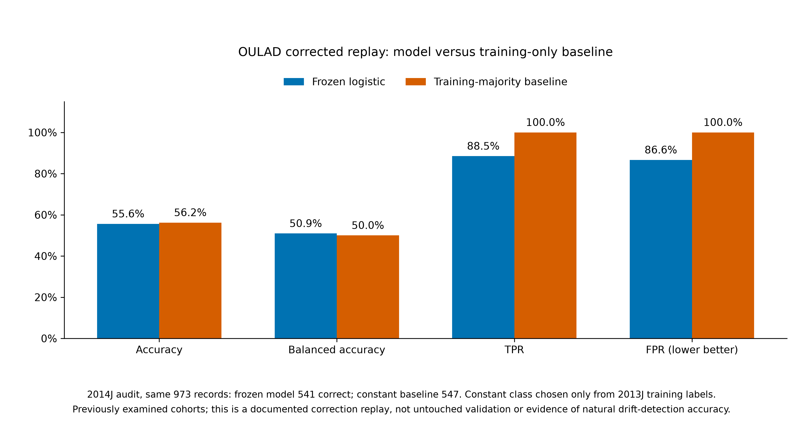
The simple majority baseline is slightly more accurate than the frozen model. Balanced accuracy is about 50.9% for the model and 50% for the baseline. This limits claims about outcome prediction; the input-monitoring comparison is a separate question.
Exact source CSV · PDF · SVG
07_compute_costs
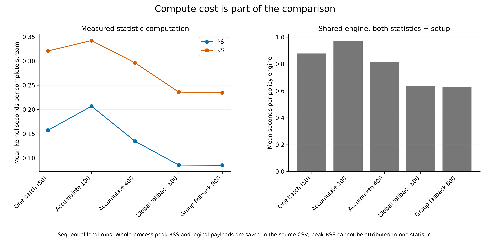
The left panel times the two statistic kernels separately. The right includes both statistics and shared setup. Memory columns distinguish small logical arrays from whole-process peak memory. Timing is hardware-dependent; no scaling guarantee is claimed.
Exact source CSV · PDF · SVG
08_oulad_corrected_psi
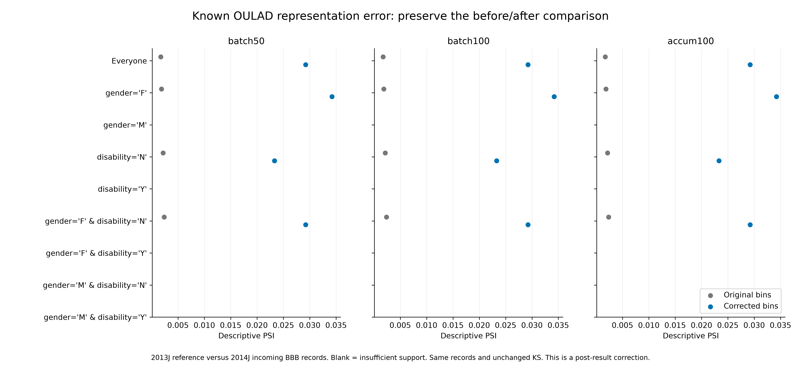
The correction separates zero, one and two-or-more previous attempts. This changes PSI because the old bins discarded that distinction. Original values are retained beside corrected values; neither gives natural drift-detection accuracy because the true onset is unknown.
Exact source CSV · PDF · SVG
09_pipeline_cost_and_memory
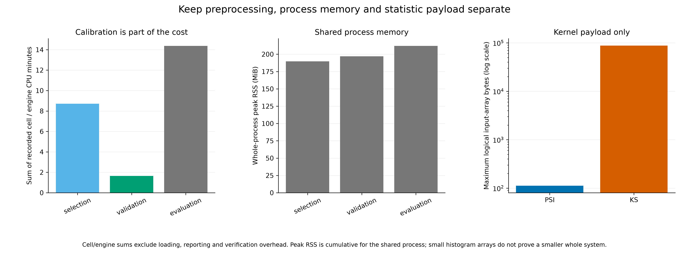
Choosing targets takes computation too. The middle panel measures the complete shared process, while the right panel counts only the statistic input arrays. These are different quantities; the small PSI histogram is not evidence that the full deployed system uses that little memory.
Exact source CSV · PDF · SVG